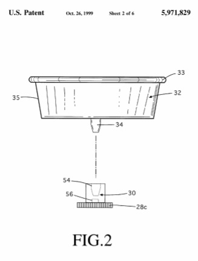

Descarga la patente original en esté enlace



Un receptáculo para comer de entretenimiento novedoso para sostener, rotar y esculpir una porción de helado o comida maleable de manera similar mientras se consume, que comprende: una carcasa de mano, una taza sostenida de manera giratoria por la carcasa de mano y adaptada para recibir y contener un porción de helado o producto alimenticio de consistencia similar, y un mecanismo de accionamiento en la carcasa de mano para impartir rotación sobre la taza y alimentar rotativamente su contenido contra la lengua extendida de una persona.
Esta invención se refiere a dispositivos novedosos para comer y divertirse, en particular, un Spinner de vasos motorizado de mano para apoyar, contener, rotar y esculpir a un individuo porción de helado o comida similarmente maleable mientras está siendo consumido.
Discusión del estado de la técnica recipientes portátiles para comer helado, incluidos los comúnmente conocidos como “conos de helado, han sido postres populares y perdurables durante generaciones. En su forma típica, un receptáculo en forma de taza o cono se sujeta en un mano de perSón para apoyar y contener a un individuo porción de helado que se consume gradualmente a través de las repetidas acciones de lamido de la lengua de la persona. Mientras variaciones en forma, textura, material y construcción abundan en esta categoría, pocos ejemplos en la técnica anterior son dirigido específicamente a mejorar o mejorar el acción de lamer realizada por el usuario o el efecto resultante tal acción de lamer tiene sobre el material que se consume.
Patente de EE.UU. 4 231 496 de Gilson (1980) da a conocer un utensilio de mano para dispensar alimentos con un anillo hueco que gira verticalmente, que, cuando es manipulado por la lengua de una persona, descarga las porciones de comida en la boca a través de orificios en el anillo. Este dispositivo es complicado de usar porque requiere que se inserten recipientes de comida en miniatura en el anillo hueco antes de su uso. Además, la tarea repetitiva de mover uno lengua arriba y abajo para manipular un anillo hueco puede convertirse monótono y agotador, especialmente para un niño, por lo tanto limita el atractivo duradero del dispositivo y su valor de juego.
Patente de EE.UU. 5.536.054 de Liaw (1996) da a conocer un novedoso dispositivo portátil para comer para balancear un palo sobre el que se ha montado un trozo de caramelo endurecido. una versión de la patente de EE.UU. Nº 5.209.692 de Coleman et al. (1993) aparece en el catálogo de productos "Cap Toys 1996" bajo el marca "EZ Freezy Spin Pop Shop" (Cap Toys, Inc., 1996, página 14) y da a conocer un Stick motorizado de mano dispositivo giratorio para girar un palo sobre el que se se ha adjuntado una piruleta. Al tiempo que proporciona nuevos medios para manipular y comer caramelos endurecidos o paletas heladas adheridas a los palitos, ninguno de estos dispositivos sirve adecuadamente como un medio para consumir alimentos más suaves y maleables como como helado suave, yogur o pudín ya que: 1) ningún dispositivo incluye una taza o receptáculo con paredes que servirían para apoyar y contener adecuadamente una parte de dicho material maleable y blando, y, 2) Dichos materiales no serían soportados o contenidos de manera efectiva por una característica de palo sola y, en consecuencia, fluiría de cada dispositivo al usuario mano.
Además de las desventajas mencionadas anteriormente, ninguna de los ejemplos de la técnica anterior citados anteriormente anticipa un dispositivo en en el que se hace girar una taza montada sobre una carcasa manual motorizada de modo que una porción de comida maleable contenida en el la taza se alimenta rotacionalmente contra la lengua de una persona para formar formas y patrones interesantes en la porción de comida mientras se siendo consumido. Además, ninguno de los ejemplos de la técnica anterior citados anticipa que dicho dispositivo incluiría una taza capaz que simplifica el llenado y la limpieza del dispositivo y permite utilizar indistintamente varios vasos diferentes sobre una carcasa de mano única, como es característico del presente invención. Tampoco ninguno de los ejemplos de la técnica anterior anticipa una configuración en la que un motor de mano cup Spinner está adaptado para recibir una masa comestible común cono relleno de helado Para que el cono común pueda ser consumido de la nueva y entretenida manera descrita por la presente invención. Además, nada del estado de la técnica ejemplos anticipan una realización de la presente invención en la que se adapta un Spinner de copa de helado motorizado de mano para simular la forma y el tacto de un CC COC de hielo tradicional.
Porque el acto de comerse un cono de helado se ha realizado tradicionalmente sosteniendo una bola de helado en gran parte estacionario en la mano en relación con el continuo lamiendo los movimientos de la lengua, el atractivo de un dispositivo que básicamente invierte este procedimiento, es decir, continuamente mueve la porción de helado mientras la lengua se mantiene en una posición relativamente estacionaria, se ha pasado por alto en gran medida.
Sin embargo, se puede ver que tal dispositivo es enormemente entretenido, extiende el disfrute natural y creativo jugar posibilidades de comer helado y de manera similar maleable alimentos y mejora la experiencia general de comer tales alimentos para niños pequeños y adultos por igual. Por lo tanto, puede se ve que sigue existiendo la necesidad de una taza giratoria de mano novedosa para sostener, contener, rotar y esculpir un porción individual de helado o alimento maleable similar durante el consumo que puedan disfrutar los niños y adultos por igual, y facilita métodos nuevos y entretenidos para comer tales alimentos.
En consecuencia, los objetos y ventajas de mi invención deben proporcionar: